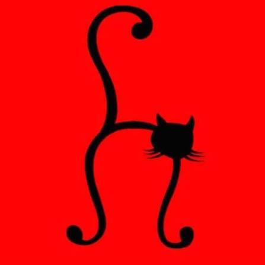
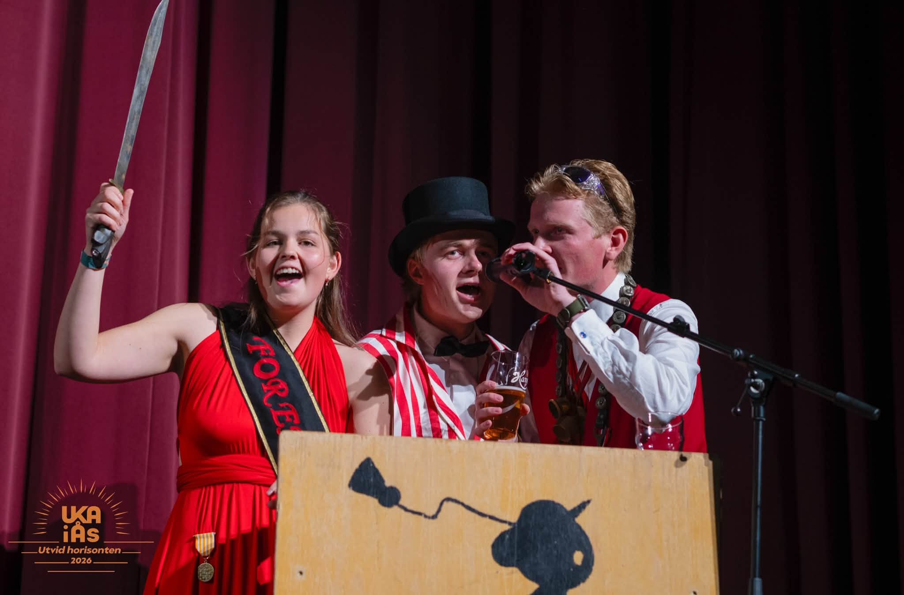
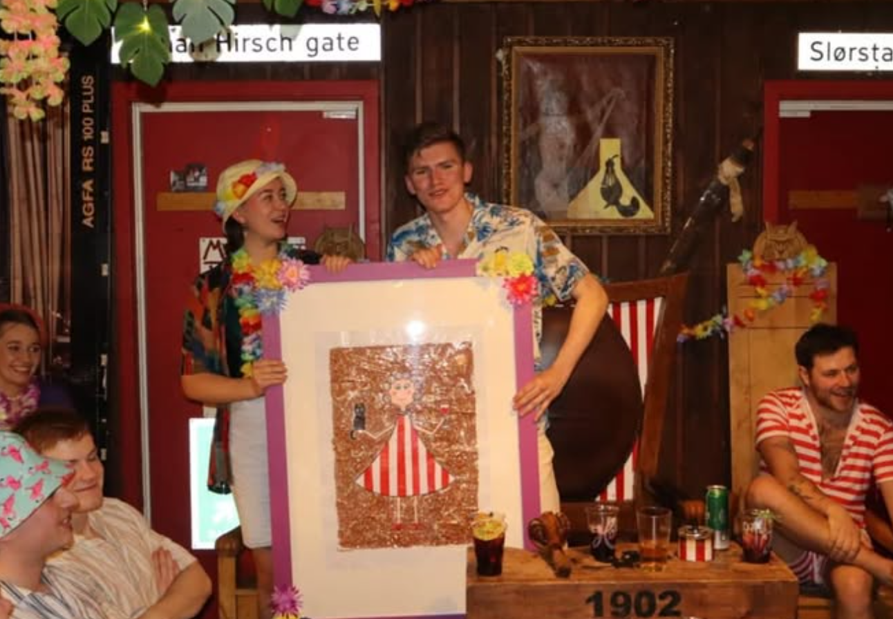
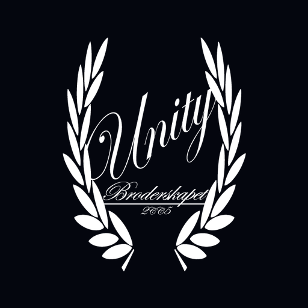
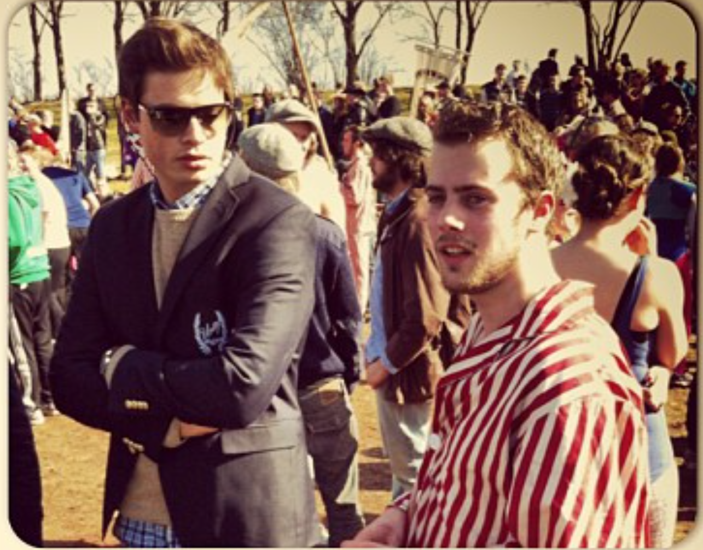
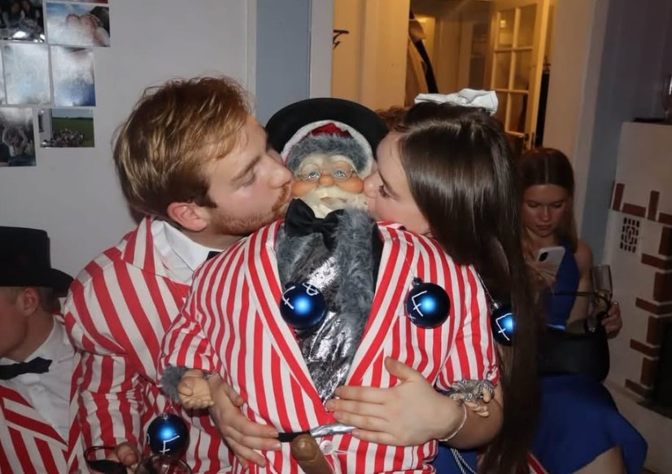
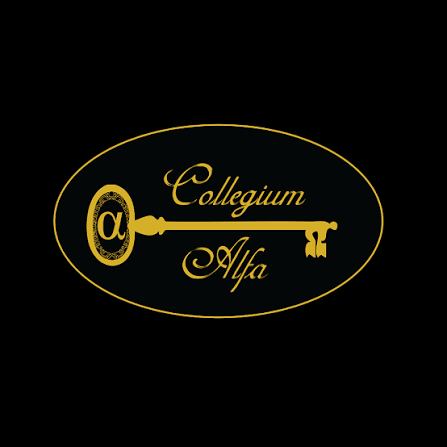
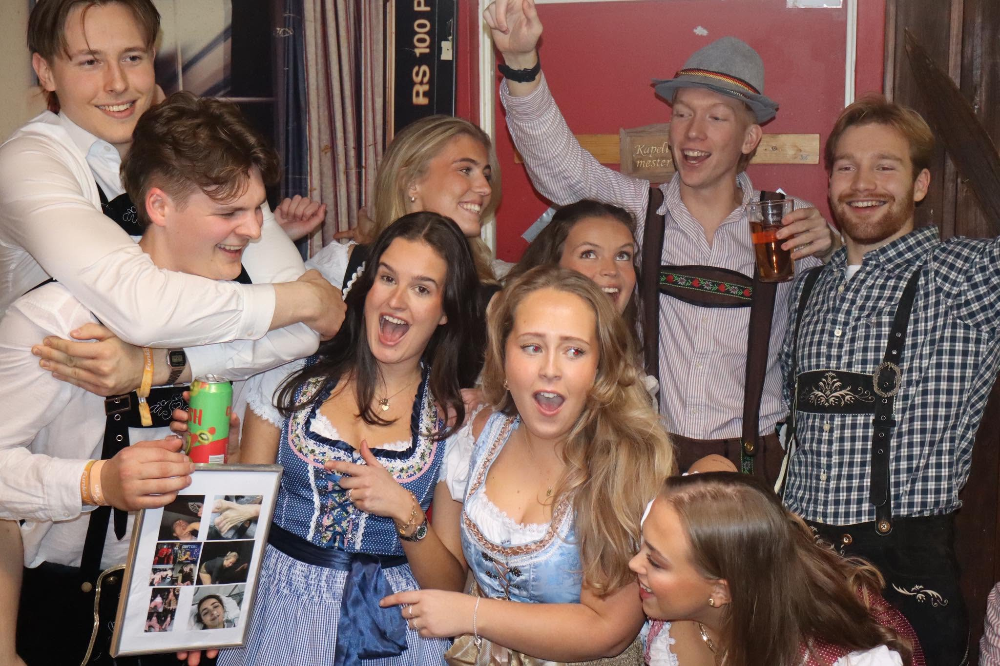

Diplomatiske relasjoner
Den Kulturelle Treenighet
Tre foreninger, ett formål: Kulturens spredning blant Agrarens studenter.


Ytterligere diplomatiske relasjoner
Pikekoret Ivar
pikekoretivar.noPikekoret Ivar ble stiftet av en Hunkatt, dog er likevel kjent for å være glade, smilende jenter som sprer god stemning med sine vakre stemmer.

Over Rævne
overraevne.comRævne er kjent for å vere barske. Vi forstår de bedre enn å tenke som så. Gøyale er de heldigvis.

Tonus Uteri
Tonus Uteri på FacebookUterinnene er det dyktige pikekoret til veterinærhøgskolen på Agrarmetropolen. De elsker dyr og er kjent for sitt motto:
«Man må bruke HELE oksen»


Broderskapet Unity
broderskapetunity.noKjent for å holde VG3 kulturen ved like.

Feminin og Fornem
femininogfornem.noSkål Førstefrøken!
Disse damene leverer hjemmelagde vaffler, iført hjemmesydde kjoler, mens de drikker hjemmebrygget vin fermentert med naturlig hjemmedyrka gjær.
Skål Fotfrøken!


Collegium Alfa
collegiumalfa.comTil å ha en så høy blondinerate er Collegium Alfa faktisk ganske skarpe. Med den ekstremt aerodynamiske dongdrakten er de ofte verdige utforderere på 3000m øl.

Det er lett å bli tryllet bort når DÅs danser, men en skal ikke la seg fullstendig hypnotisere. Det er jo alltid fare for at de er ulver i fåreklær..

Syforeningen Sting
Syforeningen Sting på FacebookI følge alle naturens lover er det ingen måte en bie skal kunne sy på. Brodden dens er for liten til å få seg gjennom den tykke tråden. Bien syr selvfølgelig likevel. Fordi bier bryr seg ikke om hva andre tror er umulig.